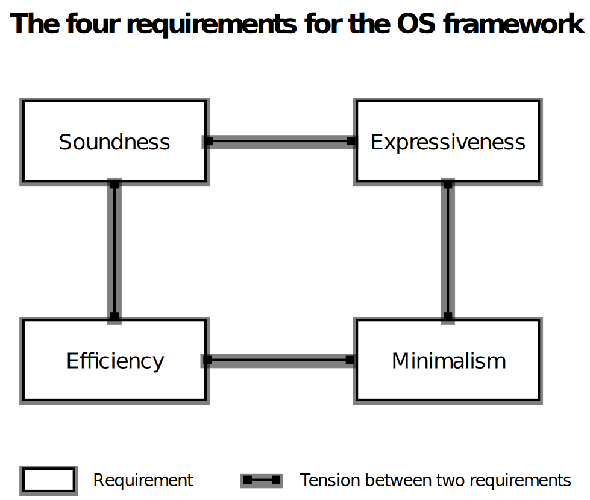

The Asterinas Book

Welcome to the documentation for Asterinas, an open-source project and community focused on developing cutting-edge Rust OS kernels.
Book Structure
This book is divided into five distinct parts:
Part 1: Asterinas Kernel
Explore the modern OS kernel at the heart of Asterinas. Designed to realize the full potential of Rust, Asterinas Kernel implements Linux ABI in a safe and efficient way. This means it can seamlessly replace Linux, offering enhanced safety and security.
Part 2: Asterinas OSTD
Asterinas OSTD lays down a minimalistic, powerful, and solid foundation
for OS development.
It's akin to Rust's std crate
but crafted for the demands of safe Rust OS development.
Asterinas Kernel is built on this very OSTD.
Part 3: Asterinas OSDK
The OSDK is a command-line tool that streamlines the workflow to create, build, test, and run Rust OS projects that are built upon Asterinas OSTD. Developed specifically for OS developers, it extends Rust's Cargo tool to better suite their specific needs. OSDK is instrumental in the development of Asterinas Kernel.
Part 4: Contributing to Asterinas
Asterinas is in its early stage and welcomes your contributions! This part provides guidance on how you can become an integral part of the Asterinas project.
Part 5: Requests for Comments (RFCs)
Significant decisions in Asterinas are made through a transparent RFC process. This part describes the RFC process and archives all approvaed RFCs.
Licensing
Asterinas's source code and documentation primarily use the Mozilla Public License (MPL), Version 2.0. Select components are under more permissive licenses, detailed here.
Our choice of the weak-copyleft MPL license reflects a strategic balance:
-
Commitment to open-source freedom: We believe that OS kernels are a communal asset that should benefit humanity. The MPL ensures that any alterations to MPL-covered files remain open source, aligning with our vision. Additionally, we do not require contributors to sign a Contributor License Agreement (CLA), preserving their rights and preventing the possibility of their contributions being made closed source.
-
Accommodating proprietary modules: Recognizing the evolving landscape where large corporations also contribute significantly to open-source, we accommodate the business need for proprietary kernel modules. Unlike GPL, the MPL permits the linking of MPL-covered files with proprietary code.
In conclusion, we believe that MPL is the best choice to foster a vibrant, robust, and inclusive open-source community around Asterinas.
Asterinas Kernel
Overview
Asterinas is a secure, fast, and general-purpose OS kernel that provides Linux-compatible ABI. It can serve as a seamless replacement for Linux while enhancing memory safety and developer friendliness.
-
Asterinas prioritizes memory safety by employing Rust as its sole programming language and limiting the use of unsafe Rust to a clearly defined and minimal Trusted Computing Base (TCB). This innovative approach, known as the framekernel architecture, establishes Asterinas as a more secure and dependable kernel option.
-
Asterinas surpasses Linux in terms of developer friendliness. It empowers kernel developers to (1) utilize the more productive Rust programming language, (2) leverage a purpose-built toolkit called OSDK to streamline their workflows, and (3) choose between releasing their kernel modules as open source or keeping them proprietary, thanks to the flexibility offered by MPL.
While the journey towards a production-grade OS kernel can be challenging, we are steadfastly progressing towards our goal. Currently, Asterinas only supports x86-64 VMs. However, our aim for 2024 is to make Asterinas production-ready on x86-64 for both bare-metal and VM environments.
Getting Started
Get yourself an x86-64 Linux machine with Docker installed. Follow the three simple steps below to get Asterinas up and running.
- Download the latest source code.
git clone https://github.com/asterinas/asterinas
- Run a Docker container as the development environment.
docker run -it --privileged --network=host --device=/dev/kvm -v $(pwd)/asterinas:/root/asterinas asterinas/asterinas:0.6.2
- Inside the container, go to the project folder to build and run Asterinas.
make build
make run
If everything goes well, Asterinas is now up and running inside a VM.
Advanced Build and Test Instructions
User-Mode Unit Tests
Asterinas consists of many crates,
some of which do not require a VM environment
and can be tested with the standard cargo test.
They are listed in the root Makefile
and can be tested together through the following Make command.
make test
To test an individual crate, enter the directory of the crate and invoke cargo test.
Kernel-Mode Unit Tests
Many crates in Asterinas do require a VM environment to be tested. The unit tests for these crates are empowered by OSDK.
make ktest
To test an individual crate in kernel mode, enter the directory of the crate and invoke cargo osdk test.
cd asterinas/ostd
cargo osdk test
Integration Test
General Test
The following command builds and runs the test binaries in test/apps directory on Asterinas.
make run AUTO_TEST=test
Syscall Test
The following command builds and runs the syscall test binaries on Asterinas.
make run AUTO_TEST=syscall
To run system call tests interactively, start an instance of Asterinas with the system call tests built and installed.
make run BUILD_SYSCALL_TEST=1
Then, in the interactive shell, run the following script to start the syscall tests.
/opt/syscall_test/run_syscall_test.sh
Debug
Using GDB to Debug
To debug Asterinas by QEMU GDB support, one could compile Asterinas in the debug profile, start an Asterinas instance and run the GDB interactive shell in another terminal.
Start a GDB-enabled VM of Asterinas with OSDK and wait for debugging connection:
make gdb_server
The server will listen at the default address specified in Makefile, i.e., a local TCP port :1234.
Change the address in Makefile for your convenience,
and check cargo osdk run -h for more details about the address.
Two options are provided to interact with the debug server.
-
A GDB client: start a GDB client in another terminal.
make gdb_client -
VS Code: CodeLLDB extension is required. After starting a debug server with OSDK from the shell with
make gdb_server, a temporarylaunch.jsonis generated under.vscode. Your previous launch configs will be restored after the server is down. PressF5(Run and Debug) to start a debug session via VS Code. ClickContinue(or, pressF5) at the fisrt break to resume the paused server instance, then it will continue until reaching your first breakpoint.
Note that if debugging with KVM enabled, you must use hardware assisted breakpoints. See "hbreak" in the GDB manual for details.
Intel TDX
Asterinas can serve as a secure guest OS for Intel TDX-protected virtual machines (VMs). This documentation describes how Asterinas can be run and tested easily on a TDX-enabled Intel server.
Intel TDX (Trust Domain Extensions) is a Trusted Execution Environment (TEE) technology that enhances VM security by creating isolated, hardware-enforced trust domains with encrypted memory, secure initialization, and attestation mechanisms. For more information about Intel TDX, jump to the last section.
Why choose Asterinas for Intel TDX
VM TEEs such as Intel TDX deserve a more secure option for its guest OS than Linux. Linux, with its inherent memory safety issues and large Trusted Computing Base (TCB), has long suffered from security vulnerabilities due to memory safety bugs. Additionally, when Linux is used as the guest kernel inside a VM TEE, it must process untrusted inputs (over 1500 instances in Linux, per Intel's estimation) from the host (via hypercalls, MMIO, and etc.). These untrusted inputs create new attack surfaces that can be exploited through memory safety vulnerabilities, known as Iago attacks.
Asterinas offers greater memory safety than Linux, particularly against Iago attacks. Thanks to its framekernel architecture, the memory safety of Asterinas relies solely on the Asterinas Framework, excluding the safe device drivers built on top of the Asterinas Framework that may handle untrusted inputs from the host. For more information, see our talk on OC3'24.
Prepare the Intel TDX Environment
Please make sure your server supports Intel TDX.
See this guide or other materials to enable Intel TDX in host OS.
To verify the TDX host status, you can type:
dmesg | grep "TDX module initialized"
The following result is an example:
[ 20.507296] tdx: TDX module initialized.
TDX module initialized means TDX module is loaded successfully.
Build and run Asterinas
- Download the latest source code.
git clone https://github.com/asterinas/asterinas
- Run a Docker container as the development environment.
docker run -it --privileged --network=host --device=/dev/kvm -v $(pwd)/asterinas:/root/asterinas asterinas/asterinas:0.6.2-tdx
- Inside the container, go to the project folder to build and run Asterinas.
make run INTEL_TDX=1
If everything goes well, Asterinas is now up and running inside a TDVM.
About Intel TDX
Intel® Trust Domain Extensions (Intel® TDX) is Intel's newest confidential computing technology. This hardware-based trusted execution environment (TEE) facilitates the deployment of trust domains (TD), which are hardware-isolated virtual machines (VM) designed to protect sensitive data and applications from unauthorized access.
A CPU-measured Intel TDX module enables Intel TDX. This software module runs in a new CPU Secure Arbitration Mode (SEAM) as a peer virtual machine manager (VMM), and supports TD entry and exit using the existing virtualization infrastructure. The module is hosted in a reserved memory space identified by the SEAM Range Register (SEAMRR).
Intel TDX uses hardware extensions for managing and encrypting memory and protects both the confidentiality and integrity of the TD CPU state from non-SEAM mode.
Intel TDX uses architectural elements such as SEAM, a shared bit in Guest Physical Address (GPA), secure Extended Page Table (EPT), physical-address-metadata table, Intel® Total Memory Encryption – Multi-Key (Intel® TME-MK), and remote attestation.
Intel TDX ensures data integrity, confidentiality, and authenticity, which empowers engineers and tech professionals to create and maintain secure systems, enhancing trust in virtualized environments.
For more information, please refer to Intel TDX website.
The Framekernel Architecture
Framekernel: What and Why
The security of a microkernel, the speed of a monolithic kernel.
Asterinas introduces a novel OS architecture called framekernel, which unleashes the full power of Rust to bring the best of both monolithic kernels and microkernels.
Within the framekernel architecture, the entire OS resides in the same address space (like a monolithic kernel) and is required to be written in Rust. However, there's a twist---the kernel is partitioned in two halves: the OS Framework (akin to a microkernel) and the OS Services. Only the OS Framework is allowed to use unsafe Rust, while the OS Services must be written exclusively in safe Rust.
| Unsafe Rust | Responsibilities | Code Sizes | |
|---|---|---|---|
| OS Framework | Allowed | Encapsulate low-level unsafe code within high-level safe APIs | Small |
| OS Services | Not allowed | Implement OS functionalities, e.g., system calls, file systems, device drivers | Large |
As a result, the memory safety of the kernel can be reduced to that of the OS Framework, thus minimizing the Trusted Computing Base (TCB) associated with the kernel's memory safety. On the other hand, the single address space allows different parts of the kernel to communicate in the most efficient means, e.g., function calls and shared memory. Thanks to the framekernel architecture, Asterinas can offer both exceptional performance and enhanced safety.

Requirements for the OS Framework
While the concept of framekernel is straightforward, the design and implementation of the required OS framework present challenges. It must concurrently fulfill four criteria.

-
Soundness. The safe APIs of the framework are considered sound if no undefined behaviors shall be triggered by whatever safe Rust code that a programmer may write using the APIs ---as long as the code is verified by the Rust toolchain. Soundness ensures that the OS framework, in conjunction with the Rust toolchain, bears the full responsibility for the kernel's memory safety.
-
Expressiveness. The framework should empower developers to implement a substantial range of OS functionalities in safe Rust using the APIs. It is especially important that the framework enables writing device drivers in safe Rust, considering that device drivers comprise the bulk of the code in a fully-fleged OS kernel (like Linux).
-
Minimalism. As the TCB for memory safety, the framework should be kept as small as possible. No functionality should be implemented inside the framework if doing it outside is possible.
-
Efficiency. The safe API provided by the framework is only allowed to introduce minimal overheads. Ideally, these APIs should be realized as zero-cost abstractions.
Fortunatelly, our efforts to design and implement an OS framework meeting these standards have borne fruit in the form of the Asterinas OSTD. Using this framework as a foundation, we have developed the Asterinas Kernel; this framework also enables others to create their own framekernels, with different goals and tradeoffs.
Linux Compatibility
"We don't break user space."
--- Linus Torvalds
Asterinas is dedicated to maintaining compatibility with the Linux ABI, ensuring that applications and administrative tools designed for Linux can seamlessly operate within Asterinas. While we prioritize compatibility, it is important to note that Asterinas does not, nor will it in the future, support the loading of Linux kernel modules.
System Calls
At the time of writing, Asterinas implements more than 160 out of the 336 system calls provided by Linux on x86-64 architecture.
| Numbers | Names | Is Implemented |
|---|---|---|
| 0 | read | ✅ |
| 1 | write | ✅ |
| 2 | open | ✅ |
| 3 | close | ✅ |
| 4 | stat | ✅ |
| 5 | fstat | ✅ |
| 6 | lstat | ✅ |
| 7 | poll | ✅ |
| 8 | lseek | ✅ |
| 9 | mmap | ✅ |
| 10 | mprotect | ✅ |
| 11 | munmap | ✅ |
| 12 | brk | ✅ |
| 13 | rt_sigaction | ✅ |
| 14 | rt_sigprocmask | ✅ |
| 15 | rt_sigreturn | ✅ |
| 16 | ioctl | ✅ |
| 17 | pread64 | ✅ |
| 18 | pwrite64 | ✅ |
| 19 | readv | ✅ |
| 20 | writev | ✅ |
| 21 | access | ✅ |
| 22 | pipe | ✅ |
| 23 | select | ✅ |
| 24 | sched_yield | ✅ |
| 25 | mremap | ❌ |
| 26 | msync | ❌ |
| 27 | mincore | ❌ |
| 28 | madvise | ✅ |
| 29 | shmget | ❌ |
| 30 | shmat | ❌ |
| 31 | shmctl | ❌ |
| 32 | dup | ✅ |
| 33 | dup2 | ✅ |
| 34 | pause | ✅ |
| 35 | nanosleep | ✅ |
| 36 | getitimer | ✅ |
| 37 | alarm | ✅ |
| 38 | setitimer | ✅ |
| 39 | getpid | ✅ |
| 40 | sendfile | ✅ |
| 41 | socket | ✅ |
| 42 | connect | ✅ |
| 43 | accept | ✅ |
| 44 | sendto | ✅ |
| 45 | recvfrom | ✅ |
| 46 | sendmsg | ✅ |
| 47 | recvmsg | ✅ |
| 48 | shutdown | ✅ |
| 49 | bind | ✅ |
| 50 | listen | ✅ |
| 51 | getsockname | ✅ |
| 52 | getpeername | ✅ |
| 53 | socketpair | ✅ |
| 54 | setsockopt | ✅ |
| 55 | getsockopt | ✅ |
| 56 | clone | ✅ |
| 57 | fork | ✅ |
| 58 | vfork | ❌ |
| 59 | execve | ✅ |
| 60 | exit | ✅ |
| 61 | wait4 | ✅ |
| 62 | kill | ✅ |
| 63 | uname | ✅ |
| 64 | semget | ❌ |
| 65 | semop | ❌ |
| 66 | semctl | ❌ |
| 67 | shmdt | ❌ |
| 68 | msgget | ❌ |
| 69 | msgsnd | ❌ |
| 70 | msgrcv | ❌ |
| 71 | msgctl | ❌ |
| 72 | fcntl | ✅ |
| 73 | flock | ❌ |
| 74 | fsync | ✅ |
| 75 | fdatasync | ✅ |
| 76 | truncate | ✅ |
| 77 | ftruncate | ✅ |
| 78 | getdents | ✅ |
| 79 | getcwd | ✅ |
| 80 | chdir | ✅ |
| 81 | fchdir | ✅ |
| 82 | rename | ✅ |
| 83 | mkdir | ✅ |
| 84 | rmdir | ✅ |
| 85 | creat | ✅ |
| 86 | link | ✅ |
| 87 | unlink | ✅ |
| 88 | symlink | ✅ |
| 89 | readlink | ✅ |
| 90 | chmod | ✅ |
| 91 | fchmod | ✅ |
| 92 | chown | ✅ |
| 93 | fchown | ✅ |
| 94 | lchown | ✅ |
| 95 | umask | ✅ |
| 96 | gettimeofday | ✅ |
| 97 | getrlimit | ❌ |
| 98 | getrusage | ✅ |
| 99 | sysinfo | ❌ |
| 100 | times | ❌ |
| 101 | ptrace | ❌ |
| 102 | getuid | ✅ |
| 103 | syslog | ❌ |
| 104 | getgid | ✅ |
| 105 | setuid | ✅ |
| 106 | setgid | ✅ |
| 107 | geteuid | ✅ |
| 108 | getegid | ✅ |
| 109 | setpgid | ✅ |
| 110 | getppid | ✅ |
| 111 | getpgrp | ✅ |
| 112 | setsid | ✅ |
| 113 | setreuid | ✅ |
| 114 | setregid | ✅ |
| 115 | getgroups | ✅ |
| 116 | setgroups | ✅ |
| 117 | setresuid | ✅ |
| 118 | getresuid | ✅ |
| 119 | setresgid | ✅ |
| 120 | getresgid | ✅ |
| 121 | getpgid | ❌ |
| 122 | setfsuid | ✅ |
| 123 | setfsgid | ✅ |
| 124 | getsid | ✅ |
| 125 | capget | ✅ |
| 126 | capset | ✅ |
| 127 | rt_sigpending | ✅ |
| 128 | rt_sigtimedwait | ❌ |
| 129 | rt_sigqueueinfo | ❌ |
| 130 | rt_sigsuspend | ✅ |
| 131 | sigaltstack | ✅ |
| 132 | utime | ✅ |
| 133 | mknod | ✅ |
| 134 | uselib | ❌ |
| 135 | personality | ❌ |
| 136 | ustat | ❌ |
| 137 | statfs | ✅ |
| 138 | fstatfs | ✅ |
| 139 | sysfs | ❌ |
| 140 | getpriority | ✅ |
| 141 | setpriority | ✅ |
| 142 | sched_setparam | ❌ |
| 143 | sched_getparam | ❌ |
| 144 | sched_setscheduler | ❌ |
| 145 | sched_getscheduler | ❌ |
| 146 | sched_get_priority_max | ❌ |
| 147 | sched_get_priority_min | ❌ |
| 148 | sched_rr_get_interval | ❌ |
| 149 | mlock | ❌ |
| 150 | munlock | ❌ |
| 151 | mlockall | ❌ |
| 152 | munlockall | ❌ |
| 153 | vhangup | ❌ |
| 154 | modify_ldt | ❌ |
| 155 | pivot_root | ❌ |
| 156 | _sysctl | ❌ |
| 157 | prctl | ✅ |
| 158 | arch_prctl | ✅ |
| 159 | adjtimex | ❌ |
| 160 | setrlimit | ❌ |
| 161 | chroot | ✅ |
| 162 | sync | ✅ |
| 163 | acct | ❌ |
| 164 | settimeofday | ❌ |
| 165 | mount | ✅ |
| 166 | umount2 | ✅ |
| 167 | swapon | ❌ |
| 168 | swapoff | ❌ |
| 169 | reboot | ❌ |
| 170 | sethostname | ❌ |
| 171 | setdomainname | ❌ |
| 172 | iopl | ❌ |
| 173 | ioperm | ❌ |
| 174 | create_module | ❌ |
| 175 | init_module | ❌ |
| 176 | delete_module | ❌ |
| 177 | get_kernel_syms | ❌ |
| 178 | query_module | ❌ |
| 179 | quotactl | ❌ |
| 180 | nfsservctl | ❌ |
| 181 | getpmsg | ❌ |
| 182 | putpmsg | ❌ |
| 183 | afs_syscall | ❌ |
| 184 | tuxcall | ❌ |
| 185 | security | ❌ |
| 186 | gettid | ✅ |
| 187 | readahead | ❌ |
| 188 | setxattr | ❌ |
| 189 | lsetxattr | ❌ |
| 190 | fsetxattr | ❌ |
| 191 | getxattr | ❌ |
| 192 | lgetxattr | ❌ |
| 193 | fgetxattr | ❌ |
| 194 | listxattr | ❌ |
| 195 | llistxattr | ❌ |
| 196 | flistxattr | ❌ |
| 197 | removexattr | ❌ |
| 198 | lremovexattr | ❌ |
| 199 | fremovexattr | ❌ |
| 200 | tkill | ❌ |
| 201 | time | ✅ |
| 202 | futex | ✅ |
| 203 | sched_setaffinity | ❌ |
| 204 | sched_getaffinity | ✅ |
| 205 | set_thread_area | ❌ |
| 206 | io_setup | ❌ |
| 207 | io_destroy | ❌ |
| 208 | io_getevents | ❌ |
| 209 | io_submit | ❌ |
| 210 | io_cancel | ❌ |
| 211 | get_thread_area | ❌ |
| 212 | lookup_dcookie | ❌ |
| 213 | epoll_create | ✅ |
| 214 | epoll_ctl_old | ❌ |
| 215 | epoll_wait_old | ❌ |
| 216 | remap_file_pages | ❌ |
| 217 | getdents64 | ✅ |
| 218 | set_tid_address | ✅ |
| 219 | restart_syscall | ❌ |
| 220 | semtimedop | ❌ |
| 221 | fadvise64 | ❌ |
| 222 | timer_create | ✅ |
| 223 | timer_settime | ✅ |
| 224 | timer_gettime | ✅ |
| 225 | timer_getoverrun | ❌ |
| 226 | timer_delete | ✅ |
| 227 | clock_settime | ❌ |
| 228 | clock_gettime | ✅ |
| 229 | clock_getres | ❌ |
| 230 | clock_nanosleep | ✅ |
| 231 | exit_group | ✅ |
| 232 | epoll_wait | ✅ |
| 233 | epoll_ctl | ✅ |
| 234 | tgkill | ✅ |
| 235 | utimes | ✅ |
| 236 | vserver | ❌ |
| 237 | mbind | ❌ |
| 238 | set_mempolicy | ❌ |
| 239 | get_mempolicy | ❌ |
| 240 | mq_open | ❌ |
| 241 | mq_unlink | ❌ |
| 242 | mq_timedsend | ❌ |
| 243 | mq_timedreceive | ❌ |
| 244 | mq_notify | ❌ |
| 245 | mq_getsetattr | ❌ |
| 246 | kexec_load | ❌ |
| 247 | waitid | ✅ |
| 248 | add_key | ❌ |
| 249 | request_key | ❌ |
| 250 | keyctl | ❌ |
| 251 | ioprio_set | ❌ |
| 252 | ioprio_get | ❌ |
| 253 | inotify_init | ❌ |
| 254 | inotify_add_watch | ❌ |
| 255 | inotify_rm_watch | ❌ |
| 256 | migrate_pages | ❌ |
| 257 | openat | ✅ |
| 258 | mkdirat | ✅ |
| 259 | mknodat | ✅ |
| 260 | fchownat | ✅ |
| 261 | futimesat | ✅ |
| 262 | newfstatat | ✅ |
| 263 | unlinkat | ✅ |
| 264 | renameat | ✅ |
| 265 | linkat | ✅ |
| 266 | symlinkat | ✅ |
| 267 | readlinkat | ✅ |
| 268 | fchmodat | ✅ |
| 269 | faccessat | ✅ |
| 270 | pselect6 | ✅ |
| 271 | ppoll | ❌ |
| 272 | unshare | ❌ |
| 273 | set_robust_list | ✅ |
| 274 | get_robust_list | ❌ |
| 275 | splice | ❌ |
| 276 | tee | ❌ |
| 277 | sync_file_range | ❌ |
| 278 | vmsplice | ❌ |
| 279 | move_pages | ❌ |
| 280 | utimensat | ✅ |
| 281 | epoll_pwait | ✅ |
| 282 | signalfd | ❌ |
| 283 | timerfd_create | ❌ |
| 284 | eventfd | ✅ |
| 285 | fallocate | ✅ |
| 286 | timerfd_settime | ❌ |
| 287 | timerfd_gettime | ❌ |
| 288 | accept4 | ✅ |
| 289 | signalfd4 | ❌ |
| 290 | eventfd2 | ✅ |
| 291 | epoll_create1 | ✅ |
| 292 | dup3 | ✅ |
| 293 | pipe2 | ✅ |
| 294 | inotify_init1 | ❌ |
| 295 | preadv | ✅ |
| 296 | pwritev | ✅ |
| 297 | rt_tgsigqueueinfo | ❌ |
| 298 | perf_event_open | ❌ |
| 299 | recvmmsg | ❌ |
| 300 | fanotify_init | ❌ |
| 301 | fanotify_mark | ❌ |
| 302 | prlimit64 | ✅ |
| 303 | name_to_handle_at | ❌ |
| 304 | open_by_handle_at | ❌ |
| 305 | clock_adjtime | ❌ |
| 306 | syncfs | ❌ |
| 307 | sendmmsg | ❌ |
| 308 | setns | ❌ |
| 309 | getcpu | ❌ |
| 310 | process_vm_readv | ❌ |
| 311 | process_vm_writev | ❌ |
| 312 | kcmp | ❌ |
| 313 | finit_module | ❌ |
| 318 | getrandom | ✅ |
| 322 | execveat | ✅ |
| 327 | preadv2 | ✅ |
| 328 | pwritev2 | ✅ |
| 435 | clone3 | ✅ |
File Systems
Here is the list of supported file systems:
- Devfs
- Devpts
- Ext2
- Procfs
- Ramfs
Sockets
Here is the list of supported socket types:
- TCP sockets over IPv4
- UDP sockets over IPv4
- Unix sockets
vDSO
Here is the list of supported symbols in vDSO:
__vdso_clock_gettime__vdso_gettimeofday__vdso_time
Boot Protocols
Here is the list of supported boot protocols:
Roadmap
Asterinas is a general-purpose OS kernel designed to support multiple CPU architectures and a variety of use cases. Currently, it only supports x86-64 VMs. Our roadmap includes the following plans:
- By 2024, we aim to achieve production-ready status for VM environments on x86-64.
- In 2025 and beyond, we will expand our support for CPU architectures and hardware devices.
Target Early Use Cases
One of the biggest challenges for a new OS kernel is driver support. Linux has been widely accepted due to its wide range of hardware support. As a newcomer, Asterinas faces the challenge of implementing drivers for all devices on a target platform, which would take a significant amount of time.
To address this obstacle, we have decided to enter the cloud market first. In an IaaS cloud, workloads of different tenants are run in VMs or VM-style bare-metal servers for maximum isolation and elasticity. The main device driver requirement for the VM environment is virtio, which is already supported by Asterinas. Therefore, using Asterinas as the guest OS of a VM or the host OS of a VM-style bare-metal server in production looks quite feasible in the near future.
Asterinas provides high assurance of memory safety thanks to the framekernel architecture. Thus, in the cloud setting, Asterinas is attractive for usage scenarios where Linux ABI is necessary but Linux itself is considered insecure due to its large Trusted Computing Base (TCB) and memory unsafety. Specifically, we are focusing on two use cases:
-
VM-based TEEs: All major CPU architectures have introduced VM-based Trusted Execution Environment (TEE) technology, such as ARM CCA, AMD SEV, and Intel TDX. Applications running inside TEEs often handle private or sensitive data. By running on a lightweight and memory-safe OS kernel like Asterinas, they can greatly enhance security and privacy.
-
Secure containers: In the cloud-native era, applications are commonly deployed in containers. The popular container runtimes like runc and Docker rely on the OS-level isolation enforced by Linux. However, Linux containers are prone to privilege escalation bugs. With its safety and security prioritized architecture, Asterinas can offer more reliable OS-level isolation, making it ideal for secure containers.
Asterinas OSTD
Confucious remarked, "I could follow whatever my heart desired without transgressing the law."
子曰： "从心所欲，不逾矩。"
With Asterinas OSTD, you don't have to learn the dark art of unsafe Rust programming and risk shooting yourself in the foot. You will be doing whatever your heart desired and be confident that your kernel will never crash or be hacked due to undefined behaviors, even if today marks your Day 1 as a Rust programmer.
APIs
Asterinas OSTD stands as a powerful and solid foundation for safe kernel development, providing high-level safe Rust APIs that are
- Essential for OS development, and
- Dependent on the use of unsafe Rust.
Most of these APIs fall into the following categories:
- Memory management (e.g., allocating and accessing physical memory pages)
- Task management (e.g., context switching between kernel tasks)
- User space (e.g., manipulating and entering the user space)
- Interrupt handling (e.g., registering interrupt handlers)
- Timer management (e.g., registering timer handlers)
- Driver support (e.g., performing DMA and MMIO)
- Boot support (e.g., retrieving information from the bootloader)
- Synchronization (e.g., locking and sleeping)
To explore how these APIs come into play, see the example of a 100-line kernel in safe Rust.
The OSTD APIs have been extensively documented. You can access the comprehensive API documentation by visiting the docs.rs.
Four Requirements Satisfied
In designing and implementing OSTD, we have risen to meet the challenge of fulfilling the aforementioned four criteria as demanded by the framekernel architecture.
Expressiveness is evident through Asterinas Kernel itself, where all system calls, file systems, network protocols, and device drivers (e.g., Virtio drivers) have been implemented in safe Rust by leveraging OSTD.
Adopting a minimalist philosophy,
OSTD has a small codebase.
At its core lies the ostd crate,
currently encompassing about 10K lines of code
---a figure that is even smaller than those of many microkernels.
As OSTD evolves,
its codebase will expand,
albeit at a relatively slow rate
in comparison to the OS services layered atop it.
OSTD's efficiency is measurable through the performance metrics of its APIs and the system calls of Asterinas Kernel. No intrinsic limitations have been identified within Rust or the framekernel architecture that could hinder kernel performance.
Soundness, unlike the other three requirements, is not as easily quantified or proved. While formal verification stands as the gold standard, it requires considerable resources and time and is not an immediate priority. As a more pragmatic approach, we will explain why the high-level design is sound in the soundness analysis and rely on the many eyes of the community to catch any potential flaws in the implementation.
Example: Writing a Kernel in About 100 Lines of Safe Rust
To give you a sense of how Asterinas OSTD enables writing kernels in safe Rust, we will show a new kernel in about 100 lines of safe Rust.
Our new kernel will be able to run the following Hello World program.
# SPDX-License-Identifier: MPL-2.0
.global _start # entry point
.section .text # code section
_start:
mov $1, %rax # syscall number of write
mov $1, %rdi # stdout
mov $message, %rsi # address of message
mov $message_end, %rdx
sub %rsi, %rdx # calculate message len
syscall
mov $60, %rax # syscall number of exit, move it to rax
mov $0, %rdi # exit code, move it to rdi
syscall
.section .rodata # read only data section
message:
.ascii "Hello, world\n"
message_end:
The assembly program above can be compiled with the following command.
gcc -static -nostdlib hello.S -o hello
The user program above requires our kernel to support three main features:
- Loading a program as a process image in user space;
- Handling the write system call;
- Handling the exit system call.
A sample implementation of the kernel in safe Rust is given below. Comments are added to highlight how the APIs of Asterinas OSTD enable safe kernel development.
// SPDX-License-Identifier: MPL-2.0
#![no_std]
extern crate alloc;
use align_ext::AlignExt;
use core::str;
use alloc::sync::Arc;
use alloc::vec;
use ostd::arch::qemu::{exit_qemu, QemuExitCode};
use ostd::cpu::UserContext;
use ostd::mm::{
CachePolicy, FrameAllocOptions, PageFlags, PageProperty, Vaddr, VmIo, VmSpace, VmWriter,
PAGE_SIZE,
};
use ostd::prelude::*;
use ostd::task::{Task, TaskOptions};
use ostd::user::{ReturnReason, UserMode, UserSpace};
/// The kernel's boot and initialization process is managed by OSTD.
/// After the process is done, the kernel's execution environment
/// (e.g., stack, heap, tasks) will be ready for use and the entry function
/// labeled as `#[ostd::main]` will be called.
#[ostd::main]
pub fn main() {
let program_binary = include_bytes!("../hello");
let user_space = create_user_space(program_binary);
let user_task = create_user_task(Arc::new(user_space));
user_task.run();
}
fn create_user_space(program: &[u8]) -> UserSpace {
let nframes = program.len().align_up(PAGE_SIZE) / PAGE_SIZE;
let user_pages = {
let vm_frames = FrameAllocOptions::new(nframes).alloc().unwrap();
// Phyiscal memory pages can be only accessed
// via the Frame abstraction.
vm_frames.write_bytes(0, program).unwrap();
vm_frames
};
let user_address_space = {
const MAP_ADDR: Vaddr = 0x0040_0000; // The map addr for statically-linked executable
// The page table of the user space can be
// created and manipulated safely through
// the `VmSpace` abstraction.
let vm_space = VmSpace::new();
let mut cursor = vm_space
.cursor_mut(&(MAP_ADDR..MAP_ADDR + nframes * PAGE_SIZE))
.unwrap();
let map_prop = PageProperty::new(PageFlags::RWX, CachePolicy::Writeback);
for frame in user_pages {
cursor.map(frame, map_prop);
}
Arc::new(vm_space)
};
let user_cpu_state = {
const ENTRY_POINT: Vaddr = 0x0040_1000; // The entry point for statically-linked executable
// The user-space CPU states can be initialized
// to arbitrary values via the UserContext
// abstraction.
let mut user_cpu_state = UserContext::default();
user_cpu_state.set_rip(ENTRY_POINT);
user_cpu_state
};
UserSpace::new(user_address_space, user_cpu_state)
}
fn create_user_task(user_space: Arc<UserSpace>) -> Arc<Task> {
fn user_task() {
let current = Task::current().unwrap();
// Switching between user-kernel space is
// performed via the UserMode abstraction.
let mut user_mode = {
let user_space = current.user_space().unwrap();
UserMode::new(user_space)
};
loop {
// The execute method returns when system
// calls or CPU exceptions occur or some
// events specified by the kernel occur.
let return_reason = user_mode.execute(|| false);
// The CPU registers of the user space
// can be accessed and manipulated via
// the `UserContext` abstraction.
let user_context = user_mode.context_mut();
if ReturnReason::UserSyscall == return_reason {
handle_syscall(user_context, current.user_space().unwrap());
}
}
}
// Kernel tasks are managed by the Framework,
// while scheduling algorithms for them can be
// determined by the users of the Framework.
TaskOptions::new(user_task)
.user_space(Some(user_space))
.data(0)
.build()
.unwrap()
}
fn handle_syscall(user_context: &mut UserContext, user_space: &UserSpace) {
const SYS_WRITE: usize = 1;
const SYS_EXIT: usize = 60;
match user_context.rax() {
SYS_WRITE => {
// Access the user-space CPU registers safely.
let (_, buf_addr, buf_len) =
(user_context.rdi(), user_context.rsi(), user_context.rdx());
let buf = {
let mut buf = vec![0u8; buf_len];
// Copy data from the user space without
// unsafe pointer dereferencing.
let current_vm_space = user_space.vm_space();
let mut reader = current_vm_space.reader(buf_addr, buf_len).unwrap();
reader
.read_fallible(&mut VmWriter::from(&mut buf as &mut [u8]))
.unwrap();
buf
};
// Use the console for output safely.
println!("{}", str::from_utf8(&buf).unwrap());
// Manipulate the user-space CPU registers safely.
user_context.set_rax(buf_len);
}
SYS_EXIT => exit_qemu(QemuExitCode::Success),
_ => unimplemented!(),
}
}OSDK User Guide
Overview
OSDK (short for Operating System Development Kit) is designed to simplify the development of Rust operating systems. It aims to streamline the process by leveraging the framekernel architecture.
OSDK provides a command-line tool cargo-osdk,
which facilitates project management
for those developed on the framekernel architecture.
cargo-osdk can be used as a subcommand of Cargo.
Much like Cargo for Rust projects,
cargo-osdk enables building, running,
and testing projects conveniently.
Install OSDK
Requirements
Currently, OSDK only works on x86_64 ubuntu system. We will add support for more operating systems in the future.
To run a kernel developed by OSDK with QEMU, the following tools need to be installed:
- Rust >= 1.75.0
- cargo-binutils
- gcc
- gdb
- grub
- ovmf
- qemu-system-x86_64
- xorriso
The dependencies required for installing Rust and running QEMU can be installed by:
apt install build-essential curl gdb grub-efi-amd64 grub2-common \
libpixman-1-dev mtools ovmf qemu-system-x86 xorriso
About how to install Rust, you can refer to the official site.
cargo-binutils can be installed
after Rust is installed by
cargo install cargo-binutils
Install
cargo-osdk is published on crates.io,
and can be installed by
cargo install cargo-osdk
Upgrate
If cargo-osdk is already installed,
the tool can be upgraded by
cargo install --force cargo-osdk
Why OSDK
OSDK is designed to elevate the development experience for Rust OS developers to the ease and convenience typically associated with Rust application development. Imagine crafting operating systems with the same simplicity as applications! This is important to Asterinas as we believe that the project's success is intricately tied to the productivity and happiness of its developers. So OSDK is here to upgrade your dev experience.
To be honest, writing OS kernels is hard. Even when you're using Rust, which is a total game-changer for OS devs, the challenge stands tall. There is a bunch of reasons.
First, it is hard to write a new kernel from scratch. Everything that has been taken for granted by application developers are gone: no stack, no heap, no threads, not even the standard I/O. It's just you and the no_std world of Rust. You have to implement these basic programming primitives by getting your hands dirty with the most low-level, error-prone, nitty-gritty of computer architecture. It's a journey of learning, doing, and a whole lot of finger-crossing to make sure everything clicks into place. This means a high entry bar for new OS creators.
Second, it is hard to reuse OS-related libraries/crates across projects. Think about it: most applications share a common groundwork, like libc, Rust's std library, or an SDK. This isn't the case with kernels -- they lack this shared starting point, forcing each one to craft its own set of tools from the ground up. Take device drivers, for example. They often need DMA-capable buffers for chatting with hardware, but since every kernel has its own DMA API flavor, a driver for one kernel is pretty much a no-go for another. This means that for each new kernel out there, developers find themselves having to 'reinvent the wheel' for many core components that are standard in other kernels.
Third, it is hard to do unit tests for OS functionalities. Unit testing plays a crucial role in ensuring code quality, but when you're dealing with a monolithic kernel like Linux, it's like a spaghetti bowl of intertwined parts. Trying to isolate one part for testing? Forget about it. You'd have to boot the whole kernel just to test a slice of it. Loadable kernel modules are no exception: you can't test them without plugging them into a live kernel. This monolithic approach to unit testing is slow and unproductive as it performs the job of unit tests at a price of integration tests. Regardless of the kernel architecture, Rust's built-in unit testing facility is not suited for kernel development, leaving each kernel to hack together their own testing frameworks.
Last, it is hard to avoid writing unsafe Rust in a Rust kernel. Rust brings safety... well, at least for Rust applications, where you can pretty much stay in the wonderland of safe Rust all the way through. But for a Rust kernel, one cannot help but use unsafe Rust. This is because, among other reasons, low-level operations (e.g., managing page tables, doing context switching, handling interrupts, and interacting with devices) have to be expressed with unsafe Rust features (like executing assembly code or dereferencing raw pointers). The misuse of unsafe Rust could lead to various safety and security issues, as reported by RustSec Advisory Database. Despite having a whole book to document "the Dark Arts of Unsafe Rust", unsafe Rust is still tricky to use correctly, even among reasoned Rust developers.
Creating an OS Project
OSDK can be used to create a new kernel project or a new library project. A kernel project defines the entry point of the kernel and can be run with QEMU. A library project can provide certain OS functionalities and be imported by other OSes.
Creating a new kernel project
Creating a new kernel project is simple. You only need to execute the following command:
cargo osdk new --kernel myos
Creating a new library project
Creating a new library project requires just one command:
cargo osdk new mylib
Generated files
Next, we will introduce the contents of the generated project in detail. If you don't wish to delve into the details, you can skip the following sections.
Overview
The generated directory for both the kernel project and library project contains the following contents:
myos/
├── Cargo.toml
├── OSDK.toml
├── rust-toolchain.toml
└── src/
└── lib.rs
src/lib.rs
Kernel project
The src/lib.rs file contains the code for a simple kernel.
The function marked with the #[ostd::main] macro
is considered the kernel entry point by OSDK.
The kernel
will print Hello world from the guest kernel!to the console
and then abort.
#![no_std]
#![deny(unsafe_code)]
use ostd::prelude::*;
#[ostd::main]
fn kernel_main() {
println!("Hello world from guest kernel!");
}Library project
The src/lib.rs of library project only contains
a simple kernel mode unit test.
It follows a similar code pattern as user mode unit tests.
The test module is marked with the #[cfg(ktest)] macro,
and each test case is marked with #[ktest].
#![no_std]
#![deny(unsafe_code)]
#[cfg(ktest)]
mod tests {
use ostd::prelude::*;
#[ktest]
fn it_works() {
let memory_regions = ostd::boot::memory_regions();
assert!(!memory_regions.is_empty());
}
}Cargo.toml
The Cargo.toml file is the Rust project manifest.
In addition to the contents of a normal Rust project,
OSDK will add the dependencies of the Asterinas OSTD to the file.
The dependency version may change over time.
[dependencies.ostd]
git = "https://github.com/asterinas/asterinas"
branch = "main"
OSDK will also exclude the directory which is used to generate temporary files.
[workspace]
exclude = ["target/osdk/base"]
OSDK.toml
The OSDK.toml file is a manifest
that defines the exact behavior of OSDK.
By default, it includes settings on how to start QEMU to run a kernel.
The meaning of each key can be found
in the manifest documentation.
Please avoid changing the default settings
unless you know what you are doing.
The default manifest of a kernel project:
project_type = "kernel"
[boot]
method = "grub-rescue-iso"
[qemu]
args = """\
-machine q35,kernel-irqchip=split \
-cpu Icelake-Server,+x2apic \
--no-reboot \
-m 8G \
-smp 1 \
-nographic \
-serial chardev:mux \
-monitor chardev:mux \
-chardev stdio,id=mux,mux=on,signal=off \
-display none \
-device isa-debug-exit,iobase=0xf4,iosize=0x04 \
-drive if=pflash,format=raw,unit=0,readonly=on,file=/usr/share/OVMF/OVMF_CODE.fd \
-drive if=pflash,format=raw,unit=1,file=/usr/share/OVMF/OVMF_VARS.fd \
"""
rust-toolchain.toml
The Rust toolchain for the kernel. It aligns with the toolchain of the Asterinas OSTD.
Running or Testing an OS Project
OSDK allows for convenient building, running, and testing of an OS project. The following example shows the typical workflow.
Suppose you have created a new kernel project named myos
and you are in the project directory:
cargo osdk new --kernel myos && cd myos
Build the project
To build the project and its dependencies, simply type:
cargo osdk build
The initial build of an OSDK project may take a considerable amount of time as it involves downloading the Rust toolchain used by the framekernel. However, this is a one-time process.
Run the project
To launch the kernel with QEMU, use the following command:
cargo osdk run
OSDK will boot the kernel and initialize OS resources like the console for output, and then hand over control to the kernel entry point to execute the kernel code.
Note: Only kernel projects (the projects
that defines the function marked with #[ostd::main])
can be run;
library projects cannot.
Test the project
Suppose you have created a new library project named mylib
which contains a default test case
and you are in the project directory.
cargo osdk new --lib mylib && cd mylib
To run the kernel mode tests, use the following command:
cargo osdk test
OSDK will run all the kernel mode tests in the crate.
Test cases can be added not only in library projects but also in kernel projects.
If you want to run a specific test with a given name,
for example, if the test is named foo,
use the following command:
cargo osdk test foo
Options
Both build, run, and test commands accept options
to control their behavior, such as how to compile and
launch the kernel.
The following documentations provide details on
all the available options:
Working in a Workspace
Typically, an operating system may consist of multiple crates, and these crates may be organized in a workspace. OSDK also supports managing projects in a workspace. Below is an example that demonstrates how to create, build, run, and test projects in a workspace.
Creating a new workspace
Create a new workspace by executing the following commands:
mkdir myworkspace && cd myworkspace
touch Cargo.toml
Then, add the following content to Cargo.toml:
[workspace]
members = []
resolver = "2"
Creating a kernel project and a library project
The two projects can be created using the following commands:
cargo osdk new --kernel myos
cargo osdk new mylib
The generated directory structure will be as follows:
myworkspace/
├── Cargo.toml
├── OSDK.toml
├── rust-toolchain.toml
├── myos/
│ ├── Cargo.toml
│ └── src/
│ └── lib.rs
└── mylib/
├── Cargo.toml
└── src/
└── lib.rs
At present, OSDK mandates that there must be only one kernel project within a workspace.
In addition to the two projects,
OSDK will also generate OSDK.toml and rust-toolchain.toml
at the root of the workspace.
Next, add the following function to mylib/src/lib.rs.
This function will calculate the available memory
after booting:
// SPDX-License-Identifier: MPL-2.0
pub fn available_memory() -> usize {
let regions = ostd::boot::memory_regions();
regions.iter().map(|region| region.len()).sum()
}Then, add a dependency on mylib to myos/Cargo.toml:
[dependencies]
mylib = { path = "../mylib" }
In myos/src/lib.rs,
modify the file content as follows.
This main function will call the function from mylib:
// SPDX-License-Identifier: MPL-2.0
#![no_std]
#![deny(unsafe_code)]
use ostd::prelude::*;
#[ostd::main]
fn kernel_main() {
let avail_mem_as_mb = mylib::available_memory() / 1_000_000;
println!("The available memory is {} MB", avail_mem_as_mb);
}Building and Running the kernel
Build and run the project using the following commands:
cargo osdk build
cargo osdk run
If everything goes well, you will see the output from the guest kernel.
Running unit test
You can run test cases from all crates by using the following command in the workspace folder:
cargo osdk test
If you want to run test cases from a specific crate,
navigate to the crate's folder
and run cargo osdk test.
For example, if you want to test mylib,
use the following command:
cd mylib && cargo osdk test
Advanced topics
This chapter delves into advanced topics regarding OSDK, including its application in TEE environments such as Intel TDX.
Running an OS in Intel TDX env
OSDK supports running your OS in an Intel TDX environment conveniently. Intel TDX can provide a more secure environment for your OS.
Prepare the Intel TDX Environment
Please make sure your server supports Intel TDX.
See this guide or other materials to enable Intel TDX in host OS.
To verify the TDX host status, you can type:
dmesg | grep "TDX module initialized"
The following result is an example:
[ 20.507296] tdx: TDX module initialized.
If you see the message "TDX module initialized", it means the TDX module has loaded successfully.
The Intel TDX environment requires TDX-enhanced versions of QEMU, KVM, GRUB, and other essential software for running an OS. Therefore, it is recommended to use a Docker image to deploy the environment.
Run a TDX Docker container:
docker run -it --privileged --network=host --device=/dev/kvm asterinas/osdk-tdx:0.4.2
Edit OSDK.toml for Intel TDX support
As Intel TDX has extra requirements or restrictions for VMs,
it demands adjusting the OSDK configurations accordingly.
This can be easily achieved with the scheme feature of OSDK,
which provides a convenient way to override the default OSDK configurations
for a specific environment.
For example, you can append the following TDX-specific scheme to your OSDK.toml file.
[scheme."tdx"]
supported_archs = ["x86_64"]
boot.method = "grub-qcow2"
grub.mkrescue_path = "~/tdx-tools/grub"
grub.protocol = "linux"
qemu.args = """\
-accel kvm \
-name process=tdxvm,debug-threads=on \
-m 6G \
-vga none \
-monitor pty \
-no-hpet \
-nodefaults \
-drive file=target/osdk/asterinas/asterinas.qcow2,if=virtio,format=qcow2 \
-monitor telnet:127.0.0.1:9001,server,nowait \
-bios /usr/share/qemu/OVMF.fd \
-object tdx-guest,sept-ve-disable=on,id=tdx,quote-generation-service=vsock:2:4050 \
-object memory-backend-memfd-private,id=ram1,size=2G \
-cpu host,-kvm-steal-time,pmu=off,tsc-freq=1000000000 \
-machine q35,kernel_irqchip=split,confidential-guest-support=tdx,memory-backend=ram1 \
-smp 1 \
-nographic \
"""
To choose the configurations specified by the TDX scheme over the default ones,
add the --scheme argument to the build, run, or test command.
cargo osdk build --scheme tdx
cargo osdk run --scheme tdx
cargo osdk test --scheme tdx
OSDK User Reference
OSDK is a command line tool that can be used as a subcommand of Cargo. The common usage of OSDK is:
cargo osdk <COMMAND>
You can use cargo osdk -h
to see the full list of available commands.
For the specific usage of a subcommand,
you can use cargo osdk help <COMMAND>.
Manifest
OSDK utilizes a manifest named OSDK.toml
to define its precise behavior regarding
how to run a kernel with QEMU.
The OSDK.toml file should be placed
in the same folder as the project's Cargo.toml.
The Manifest documentation
provides an introduction
to all the available configuration options.
The command line tool can also be used to set the options in the manifest. If both occur, the command line options will always take priority over the options in the manifest. For example, if the manifest defines the path of QEMU as:
[qemu]
path = "/usr/bin/qemu-system-x86_64"
But the user provides a new QEMU path when running the project using:
cargo osdk run --qemu.path="/usr/local/qemu-kvm"
Then, the actual path of QEMU should be /usr/local/qemu-kvm
since command line options have higher priority.
Commands
OSDK provides similar subcommands as Cargo, and these subcommands have simalar meanings as corresponding Cargo subcommands.
Currently, OSDK supports the following subcommands:
- new: Create a new kernel package or library package
- build: Compile the project and its dependencies
- run: Run the kernel with a VMM
- test: Execute kernel mode unit test by starting a VMM
- debug: Debug a remote target via GDB
- check: Analyze the current package and report errors
- clippy: Check the current package and catch common mistakes
The new, build, run, test and debug subcommands can accept additional options, while the check and clippy subcommands can only accept arguments that are compatible with the corresponding Cargo subcommands.
cargo osdk new
Overview
The cargo osdk new command
is used to create a kernel project
or a new library project.
The usage is as follows:
cargo osdk new [OPTIONS] <name>
Arguments
<name>: the name of the crate.
Options
--kernel:
Use the kernel template.
If this option is not set,
the library template will be used by default.
--library:
Use the library template. This is the default option.
Examples
- Create a new kernel named
myos:
cargo osdk new --kernel myos
- Create a new library named
mylib:
cargo osdk new mylib
cargo osdk build
Overview
The cargo osdk build command is used to
compile the project and its dependencies.
The usage is as follows:
cargo osdk build [OPTIONS]
Options
The options can be divided into two types:
Cargo options that can be accepted by Cargo,
and Manifest options that can also be defined
in the manifest named OSDK.toml.
Cargo options
-
--profile <PROFILE>: Build artifacts with the specified Cargo profile (built-in candidates are 'dev', 'release', 'test', and 'bench') [default: dev] -
--release: Build artifacts in release mode, with optimizations -
--features <FEATURES>: Space or comma separated list of features to activate -
--no-default-features: Do not activate thedefaultfeatures -
--config <KEY=VALUE>: Override a configuration value
More Cargo options will be supported in future versions of OSDK.
Manifest options
These options can also be defined
in the project's manifest named OSDK.toml.
Command line options are used to override
or append values in OSDK.toml.
The allowed values for each option can be found
in the Manifest Documentation.
--kcmd-args <ARGS>: Command line arguments for the guest kernel--init-args <ARGS>: Command line arguments for the init process--initramfs <PATH>: Path of the initramfs--boot-method <METHOD>: The method to boot the kernel--grub-mkrescue <PATH>: Path of grub-mkrescue--grub-boot-protocol <PROTOCOL>: The boot protocol for booting the kernel--display-grub-menu: To display the GRUB menu if booting with GRUB--qemu-exe <FILE>: The QEMU executable file--qemu-args <ARGS>: Extra arguments for running QEMU--strip-elf: Whether to strip the built kernel ELF usingrust-strip--scheme <SCHEME>: Select the specific configuration scheme provided in the OSDK manifest--encoding <FORMAT>: Denote the encoding format for kernel self-decompression
Examples
- Build a project with
./initramfs.cpio.gzas the initramfs andmultiboot2as the boot protocol used by GRUB:
cargo osdk build --initramfs="./initramfs.cpio.gz" --grub-boot-protocol="multiboot2"
- Build a project and append
sh,-lto init process arguments:
cargo osdk build --init_args="sh" --init_args="-l"
cargo osdk run
Overview
cargo osdk run is used to run the kernel with QEMU.
The usage is as follows:
cargo osdk run [OPTIONS]
Options
Most options are the same as those of cargo osdk build.
Refer to the documentation of cargo osdk build
for more details.
Options related with debugging:
-G, --enable-gdb: Enable QEMU GDB server for debugging.--vsc: Generate a '.vscode/launch.json' for debugging kernel with Visual Studio Code (only works when QEMU GDB server is enabled, i.e.,--enable-gdb). Requires CodeLLDB.--gdb-server-addr <ADDR>: The network address on which the GDB server listens, it can be either a path for the UNIX domain socket or a TCP port on an IP address. [default:.aster-gdb-socket(a local UNIX socket)]
See Debug Command to interact with the GDB server in terminal.
Examples
- Launch a debug server via QEMU with an unix socket stub, e.g.
.debug:
cargo osdk run --enable-gdb --gdb-server-addr .debug
- Launch a debug server via QEMU with a TCP stub, e.g.,
localhost:1234:
cargo osdk run --enable-gdb --gdb-server-addr :1234
- Launch a debug server via QEMU and use VSCode to interact:
cargo osdk run --enable-gdb --vsc --gdb-server-addr :1234
cargo osdk test
cargo osdk test is used to
execute kernel mode unit test by starting QEMU.
The usage is as follows:
cargo osdk test [OPTIONS] [TESTNAME]
Arguments
[TESTNAME]: Only run tests containing this string in their names
Options
The options are the same as those of cargo osdk build.
Refer to the documentation of cargo osdk build
for more details.
Examples
- Execute tests that include foo in their names using QEMU with 3GB of memory
cargo osdk test foo --qemu-args="-m 3G"
cargo osdk debug
Overview
cargo osdk debug is used to debug a remote target via GDB.
The usage is as follows:
cargo osdk debug [OPTIONS]
Options
--remote <REMOTE>:
Specify the address of the remote target [default: .aster-gdb-socket].
The address can be either a path for the UNIX domain socket
or a TCP port on an IP address.
Examples
- To debug a remote target via a
QEMU GDB stub,
- connect to an unix socket, e.g.,
./debug;
cargo osdk debug --remote ./debug- connect to a TCP port (
[IP]:PORT), e.g.,localhost:1234.
cargo osdk debug --remote localhost:1234 - connect to an unix socket, e.g.,
Manifest
Overview
OSDK utilizes a manifest to define its precise behavior.
Typically, the configuration file is named OSDK.toml
and is placed in the root directory of the workspace
(the same directory as the workspace's Cargo.toml).
If there is only one crate and no workspace,
the file is placed in the crate's root directory.
For a crate inside workspace,
it may have two distinct related manifests,
one is of the workspace
(in the same directory as the workspace's Cargo.toml)
and one of the crate
(in the same directory as the crate's Cargo.toml).
OSDK will first refer to the crate-level manifest, then
query the workspace-level manifest for undefined fields.
In other words, missing fields of the crate manifest
will inherit values from the workspace manifest.
Configurations
Below, you will find a comprehensive version of the available configurations in the manifest.
project_type = "kernel" # <1>
# --------------------------- the default schema settings -------------------------------
supported_archs = ["x86_64", "riscv64"] # <2>
# The common options for all build, run and test subcommands
[build] # <3>
features = ["no_std", "alloc"] # <4>
profile = "dev" # <5>
strip_elf = false # <6>
encoding = "raw" # <7>
[boot] # <8>
method = "qemu-direct" # <9>
kcmd_args = ["SHELL=/bin/sh", "HOME=/"] # <10>
init_args = ["sh", "-l"] # <11>
initramfs = "path/to/it" # <12>
[grub] # <13>
mkrescue_path = "path/to/it" # <14>
protocol = "multiboot2" # <15>
display_grub_menu = false # <16>
[qemu] # <17>
path = "path/to/it" # <18>
args = "-machine q35 -m 2G" # <19>
# Special options for run subcommand
[run] # <20>
[run.build] # <3>
[run.boot] # <8>
[run.grub] # <13>
[run.qemu] # <17>
# Special options for test subcommand
[test] # <21>
[test.build] # <3>
[test.boot] # <8>
[test.grub] # <13>
[test.qemu] # <17>
# ----------------------- end of the default schema settings ----------------------------
# A customized schema settings
[schema."custom"] # <22>
[schema."custom".build] # <3>
[schema."custom".run] # <20>
[schema."custom".test] # <21>
Here are some additional notes for the fields:
-
The type of current crate.
Optional. If not specified, the default value is inferred from the usage of the macro
#[ostd::main]. if the macro is used, the default value iskernel. Otherwise, the default value islibrary.Possible values are
libraryorkernel. -
The architectures that can be supported.
Optional. By default OSDK supports all architectures. When building or running, if not specified in the CLI, the architecture of the host machine will be used.
Possible values are
aarch64,riscv64,x86_64. -
Options for compilation stage.
-
Cargo features to activate.
Optional. The default value is empty.
Only features defined in
Cargo.tomlcan be added to this array. -
Build artifacts with the specified Cargo profile.
Optional. The default value is
dev.Possible values are
dev,release,test, andbenchand other profiles defined inCargo.toml. -
Whether to strip the built kernel ELF using
rust-strip.Optional. The default value is
false. -
Denote the encoding format for kernel self-decompression
Optional. The default value is
raw.Possible values are
raw,gzipandzlib.If the boot protocol is not
linux, it is not allowed to specipy the econding format. -
Options for booting the kernel.
-
The boot method.
Optional. The default value is
qemu-direct.Possible values are
grub-rescue-iso,grub-qcow2andqemu-direct. -
The arguments provided will be passed to the guest kernel.
Optional. The default value is empty.
Each argument should be in one of the following two forms:
KEY=VALUEorKEYif no value is required. EachKEYcan appear at most once. -
The arguments provided will be passed to the init process, usually, the init shell.
Optional. The default value is empty.
-
The path to the initramfs.
Optional. The default value is empty.
If the path is relative, it is relative to the manifest's enclosing directory.
-
Grub options. Only take effect if boot method is
grub-rescue-isoorgrub-qcow2. -
The path to the
grub-mkrescueexecutable.Optional. The default value is the executable in the system path, if any.
If the path is relative, it is relative to the manifest's enclosing directory.
-
The protocol GRUB used.
Optional. The default value is
multiboot2.Possible values are
linux,multiboot,multiboot2. -
Whether to display the GRUB menu when booting with GRUB.
Optional. The default value is
false. -
Options for finding and starting QEMU.
-
The path to the QEMU executable.
Optional. The default value is the executable in the system path, if any.
If the path is relative, it is relative to the manifest's enclosing directory.
-
Additional arguments passed to QEMU are organized in a single string that can include any POSIX shell compliant separators.
Optional. The default value is empty.
Each argument should be in the form of
KEYandVALUEorKEYif no value is required. Some keys can appear multiple times (e.g.,-device,-netdev), while other keys can appear at most once. Certain keys, such as-kerneland-initrd, are not allowed to be set here as they may conflict with the settings of OSDK.The field will be evaluated, so it is ok to use environment variables in the arguments (usually for paths or conditional arguments). You can even use this mechanism to read from files by using command replacement
$(cat path/to/your/custom/args/file). -
Special settings for running. Only take effect when running
cargo osdk run.By default, it inherits common options.
Values set here are used to override common options.
-
Special settings for testing.
Similar to
20, but only take effect when runningcargo osdk test. -
The definition of customized schema.
A customized schema has the same fields as the default schema. By default, a customized schema will inherit all options from the default schema, unless overridden by new options.
Example
Here is a sound, self-explanatory example which is used by OSDK in the Asterinas project.
In the script ./tools/qemu_args.sh, the environment variables will be
used to determine the actual set of qemu arguments.
# The OSDK manifest at the Asterinas root virtual workspace
# provides default OSDK settings for all packages.
# The common options for build, run and test
[boot]
method = "grub-rescue-iso"
[grub]
protocol = "multiboot2"
[qemu]
args = "$(./tools/qemu_args.sh normal -ovmf)"
# Special options for running
[run.boot]
kcmd_args = [
"SHELL=/bin/sh",
"LOGNAME=root",
"HOME=/",
"USER=root",
"PATH=/bin:/benchmark",
"init=/usr/bin/busybox",
]
init_args = ["sh", "-l"]
initramfs = "test/build/initramfs.cpio.gz"
# Special options for testing
[test.boot]
method = "qemu-direct"
[test.qemu]
args = "$(./tools/qemu_args.sh test)"
# Other Schemes
[scheme."microvm"]
boot.method = "qemu-direct"
build.strip_elf = true
qemu.args = "$(./tools/qemu_args.sh microvm)"
[scheme."iommu"]
supported_archs = ["x86_64"]
qemu.args = "$(./tools/qemu_args.sh iommu)"
[scheme."tdx"]
supported_archs = ["x86_64"]
build.features = ["cvm_guest"]
boot.method = "grub-qcow2"
grub.protocol = "linux"
qemu.args = """\
-name process=tdxvm,debug-threads=on \
-m ${MEM:-8G} \
-smp ${SMP:-1} \
-vga none \
-nographic \
-monitor pty \
-no-hpet \
-nodefaults \
-bios /usr/share/qemu/OVMF.fd \
-object tdx-guest,sept-ve-disable=on,id=tdx,quote-generation-service=vsock:2:4050 \
-cpu host,-kvm-steal-time,pmu=off \
-machine q35,kernel_irqchip=split,confidential-guest-support=tdx,memory-backend=ram1 \
-object memory-backend-memfd-private,id=ram1,size=${MEM:-8G} \
-device virtio-net-pci,netdev=mynet0 \
-device virtio-keyboard-pci,disable-legacy=on,disable-modern=off \
-netdev user,id=mynet0,hostfwd=tcp::10027-:22 \
-chardev stdio,id=mux,mux=on,logfile=qemu.log \
-device virtio-serial,romfile= \
-device virtconsole,chardev=mux \
-device isa-debug-exit,iobase=0xf4,iosize=0x04 \
-monitor chardev:mux \
-serial chardev:mux \
"""
Scheme
Scheme is an advanced feature to create multiple profiles for
the same actions under different scenarios. Scheme allows any
user-defined keys and can be selected by the --scheme CLI
argument. The key scheme can be used to create special settings
(especially special QEMU configurations). If a scheme action is
matched, unspecified and required arguments will be inherited
from the default scheme.
Rust Guidelines
API Documentation Guidelines
API documentation describes the meanings and usage of APIs, and will be rendered into web pages by rustdoc.
It is necessary to add documentation to all public APIs,
including crates, modules, structs, traits, functions, macros, and more.
The use of the #[warn(missing_docs)] lint enforces this rule.
Asterinas adheres to the API style guidelines of the Rust community. The recommended API documentation style can be found at how-to-write-documentation.
Lint Guidelines
Lints help us improve the code quality and find more bugs. When suppressing lints, the suppression should affect as little scope as possible, to make readers aware of the exact places where the lint is generated, and to make it easier for subsequent committers to maintain such lint.
For example, if some methods in a trait are dead code, marking the entire trait as dead code is unnecessary and can easily be misinterpreted as the trait itself being dead code. Instead, the following pattern is preferred:
trait SomeTrait {
#[allow(dead_code)]
fn foo();
#[allow(dead_code)]
fn bar();
fn baz();
}There is one exception:
If it is clear enough that every member will trigger the lint,
it is reasonable to allow the lint at the type level.
For example, in the following code,
we add #[allow(non_camel_case_types)] for the type SomeEnum,
instead of for each variant of the type:
#[allow(non_camel_case_types)]
enum SomeEnum {
FOO_ABC,
BAR_DEF,
}When to #[allow(dead_code)]
In general, dead code should be avoided because (i) it introduces unnecessary maintenance overhead, and (ii) its correctness can only be guaranteed by manual and error-pruned review of the code.
In the case where allowing dead code is necessary, it should fulfill the following requirements:
- We have a concrete case that will be implemented in the future and will turn the dead code into used code.
- The semantics of the dead code are clear enough (perhaps with the help of some comments), even if the use case has not been added.
- The dead code is simple enough that both the committer and the reviewer can be confident that the code must be correct without even testing it.
- It serves as a counterpart to existing non-dead code.
For example, it is fine to add ABI constants that are unused because the corresponding feature (e.g., a system call) is partially implemented. This is a case where all of the above requirements are met, so adding them as dead code is perfectly acceptable.
Boterinas
Introduction
@boterinas is a general-purpose bot designed for a wide variety of tasks in Asterinas. It streamlines maintenance tasks to enhance workflow efficiency.
Commands are issued by writing comments that start with the text @boterinas. The available commands depend on which repository you are using. The main Asterinas repository contains a triagebot.toml file where you can see which features are enabled.
Commands for GitHub issues or pull requests should be issued by writing @boterinas followed by the command anywhere in the comment. Note that @boterinas will ignore commands in Markdown code blocks, inline code spans, or blockquotes. You can enter multiple @boterinas commands in a single comment.
For example, you can claim an issue and add a label in the same comment.
@boterinas claim
@boterinas label C-enhancement
Additionally, @boterinas allows for editing comments. If you don't change the text of a command, the edit will be ignored. However, if you modify an existing command or add new ones, those commands will be processed.
Below, you'll find a comprehensive guide on how to use @boterinas effectively.
Commands and Usage
Workflow Management
@boterinas rerun
Restarts the workflow of the current pull request if it has failed unexpectedly. Only the author of the pull request can use this command.
Issue and Pull Request Management
-
@boterinas claim
Assigns the issue or pull request to yourself. -
@boterinas release-assignment
Removes the current assignee from an issue or pull request. This command can only be executed by the current assignee or a team member. -
@boterinas assign @user
Assigns a specific user to the issue or pull request. Only team members have permission to assign other users.
Example:@boterinas assign @some_asterinas
Label Management
-
@boterinas label <label>
Adds a label to the issue or pull request.
Example:@boterinas label C-enhancement C-rfc -
@boterinas label -<label>
Removes a label from the issue or pull request.
Example:@boterinas label -C-enhancement -C-bug
Status Indicators
-
@boterinas author
Indicates that a pull request is waiting on the author. It assigns theS-waiting-on-authorlabel and removes bothS-waiting-on-reviewandS-blocked, if present. -
@boterinas blocked
Marks a pull request as blocked on something. -
@boterinas ready
Indicates that a pull request is ready for review. This command can also be invoked with the aliases@boterinas reviewor@boterinas reviewer.
Notes
- Only team members can assign users or remove assignments.
- Labels are crucial for organizing issues and pull requests, so ensure they are used consistently and accurately.
- For any issues or questions regarding
@boterinas, please reach out to the team for support.